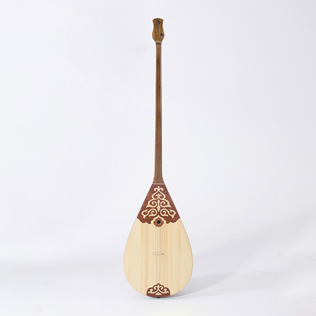

Географиялық картада 1991 жылы пайда болған Қазақстан Республикасы Еуразияның қақ ортасында орналасқан. Қазақ атауы Түрік тілінен аударғанда «еркін адам» деген мағынаны, яғни тарихи таралған еркіндікті сүйетін көшпенділер дегенді білдіреді.
Мыңдаған жылдар бойы көшпенділер мал отарларымен бірге таулардың баурайлары мен өзендер жағалауындағы шұрайлы жерлерде көшіп жүрген. Бағалы терілер тасымалданатын тарихи Жібек жолы және Бұлғын жол Азия және Еуропа арасында маңызды сауда, экономикалық, мәдени өткелі болған Қазақстан аумағы арқылы өткен.
| Облыстар: |
Халық саны: |
Жер аумағы: |
| Ақмола облысы |
738 611 адам |
146,2 мың км² |
| Ақтөбе облысы |
300 000 адам |
122,3 мың км² |
| Алматы облысы |
2 038 934 адам |
224,0 мың км2 |
| Атырау облысы |
631 841 адам |
118 631 км² |
| Батыс Қазақстан облысы |
651 356 адам |
151 339 км² |
| Жамбыл облысы |
1 123 687 адам |
144 264 км² |
| Қарағанды облысы |
1 379 061 адам |
427 982 км² |
| Қызылорда облысы |
792 562 адам |
226 076 км² |
| Қостанай облысы |
873 444 адам |
196 001 км² |
| Маңғыстау облысы |
678 199 адам |
165 642 км² |
| Түркістан облысы |
1 973 331 адам |
116 280 км² |
| Павлодар облысы |
754 016 адам |
124 755 км² |
| Солтүстік Қазақстан облысы |
555 485 адам |
97 993 км² |
| Шығыс Қазақстан облысы |
1 379 739 адам |
283 226 км² |
Алтын адам
1960 жылдардың аяқ кезінде археолог ғалымдар Есік қаласына жақын жердегі обадан «Алтын киімді адамды» тапты. Ол мұнан 2500 жылдай бұрын жерленген жас жігіт екен. Марқұмға кигізілген бас киімнің, етігінің қонышының сыртына алтыннан жасалған түрлі ұсақ аттың, барыстың, таутекенің, құстардың бейнелері жапсырылған. Олардың саны төрт мыңдай Есік қорғанынан табылған олжа бүгінде әлемге әйгілі. Алматыдағы Тәуелсіздік монументіне де негіз болып отыр. Осы күнге дейін сақталып келген Алтын адам да қазақтың жеті кереметіне енді.
Қазақтың киіз үйі
Киіз үй- көптеген ғасырлар бойы Еуразияның ұшы-қиырсыз жазирасын басқарған ежелгі халықтың көшпенді тұрмысы мен өмір салтына мейлінше қолайлы болған баспана түрі.

Домбыра
Ендігі сөз қазақ халқының жан сезімі, жан серігі - домбыра туралы. Домбыра - халық даналығы. Ол халқымыздың өмір тәжірибесі мен табиғат, адам, әлем туралы білімдерін, ескі діни наным-сенімдері мен философиялық көзқарасын бейнелеп, оларды атадан-балаға, ұрпақтан-ұрпаққа жалғастырып отырды.
Яссауи
Түркістан - Орта Азия мен Қазақстан халықтарының материалдық және рухани өмірінде маңызды орын алған Шығыстың көне қалаларының бірі. 1500 жылдығын тойлап өткен Түркістан - руханият ордасы, оған ерекше мәртебе беру қажет. Бірақ бүгінгі сөзіміз Қ. А. Иассауи ғимараты туралы. Ахмет Иассауи Оңтүстік Қазақстанның Сайрам (бұрынғы Испиджаб) қаласында 1103 жылы дүниеге келген.
Маңғыстау жер асты мешіті
Бекет Ата жер асты мешіті- Оңтүстік Үстірттің Маңғыстау ойысына тірелген тұмсығының үзіліп қалған Оғыланды шоқысына қашалған тарихи-сәулет ескерткіші. Үш - төрт қанат киіз үйдің көлеміндей үш бөлме. Дерекке сүйенсек, Бекет ата 1750 жылы туылып, емші, көріпкел ғана емес, физика, математика, астрономия заңдылықтарын жақсы білген ғұлама ретінде аты танылған.
Бәйтерек
«Бәйтерек» монументі Есіл өзенінің жағасындағы Қазақстанның астанасы Нұр-Сұлтан қаласында орналасқан. Металлдан, әйнек пен бетоннан жасалған бұл «терек» сәулеттік мағынасы жағынан бірегей: биіктігі 105 метрлік металл құрамасынан, салмағы 1000 тоннадан жоғары ададан тұрады. Монументтегі барлық дүние - төбесіндегі алтын күн, 97 метрлік биіктігі, және аспан әлемінің үш негізін кейіптейтін үш аймаққа бөлінген ішкі архитектурасы белгілі бір символды білдіреді.
Таңбалы тас
Таңбалы тас суреттері Қола дәуірінің тасқа салынған суреттері көрген адамды таң қалдырады. Ертедегі адамдар күнге күйген жылтыр тау жартастарына жануарларды, адамдарды, арбаларды, соғыс көріністерін қашап салды. Бұл адамзаттың рухани мәдениетін, анық дүниетанымын білдіретін аса маңызды деректер жиынтығы саналады.